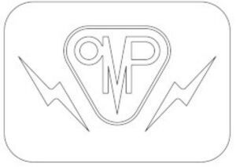

Trade Mark Journal No.2025/038 19 September 2025
WO0000001874322 (7,9,12)
Office of origin: Italy
Date of International Registration:16 June 2025
Date of designation in the UK:
16 June 2025

The trademark consists of the wording "OMP" in fanciful font, inside a triangular figure, pointed downwards, with double thickness and rounded corners, on the left and right sides of the triangle are depictions of lightning bolts, the whole mark is contained inside a rectangular figure, with rounded corners.
International priority date claimed: 20 December 2024
(Italy)
(302024000190755)
- Class 7
- Electric motors, other than for land vehicles; electric motors for vehicle water, oil and vacuum pumps; electricity generators for land vehicles containing fuel cells; alternators for land vehicles; generators for land vehicles; water pumps; water pumps for fuel cells; oil pumps; oil pumps for fuel cells; gearbox oil pumps; vacuum pumps [machines]; cooling fans for vehicle engines; control units for fans; motors, other than for land vehicles; transmission components (except for land vehicles); machine parts; electric water and oil pumps for cooling and/or lubrication; electric vacuum pumps.
- Class 9
- Control units for driving machines and motors; control units (inverters/drivers) for electric motors; electrical power distribution or control units for land vehicles; electrical transmission units for land vehicles.
- Class 12
- Transmission components for land vehicles; motors, electric, for land vehicles; parts and components of electric vehicles; fuel cell vehicles and their parts and accessories; AC or DC motors for land vehicles (excluding their components).
O.M.P. OFFICINE MAZZOCCO PAGNONI S.r.l.
Representative: PORTA & CONSULENTI ASSOCIATI S.P.A., Via Giovanni Gioacchino Winckelmann 1, I-20146 Milano MI, ITALY